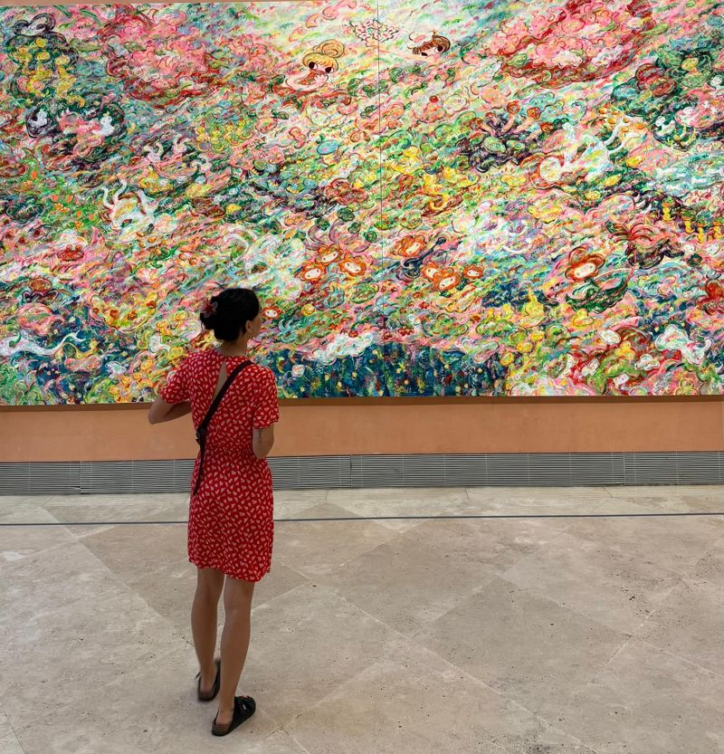
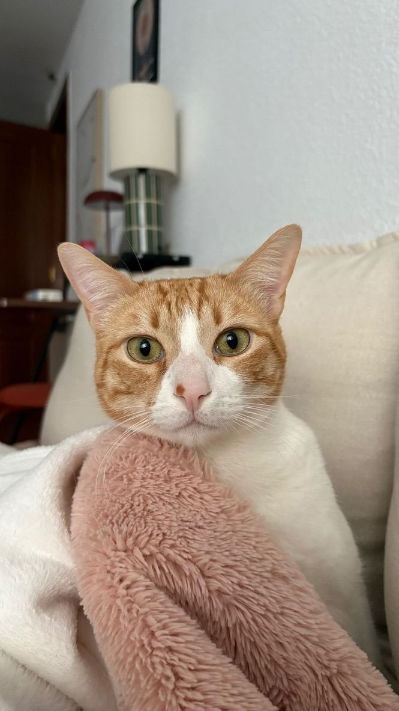
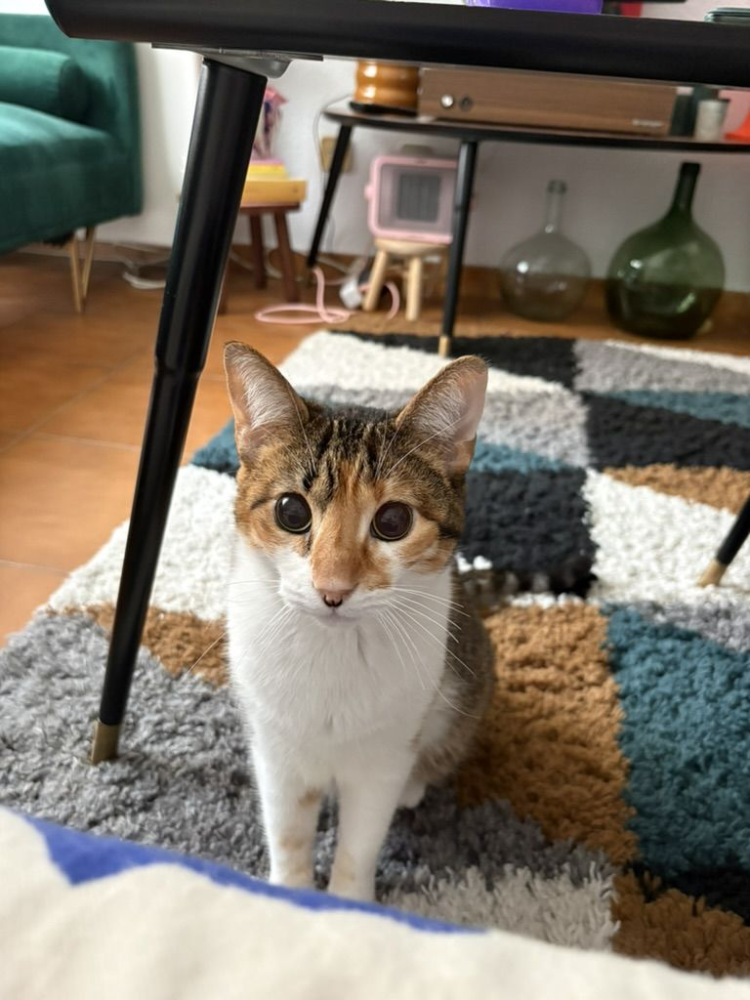
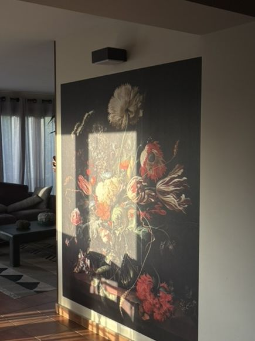
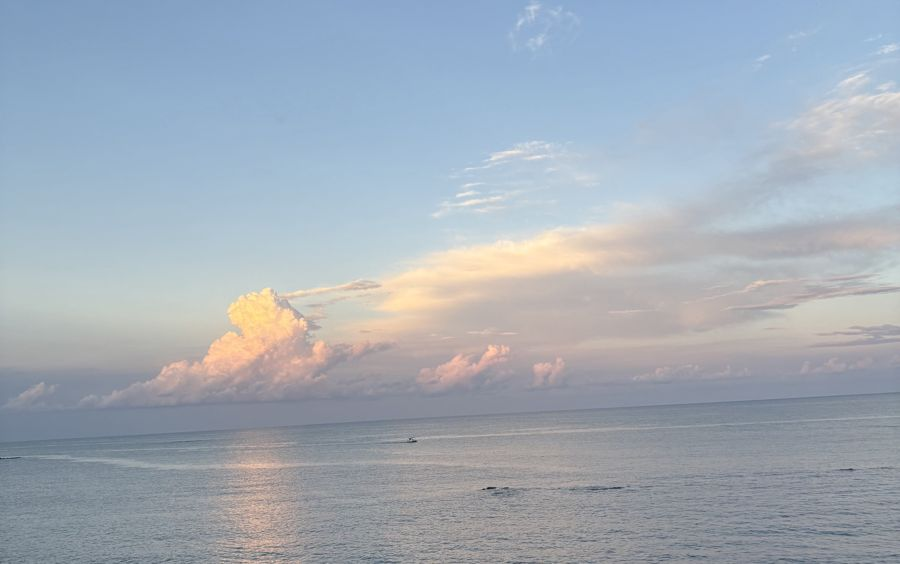
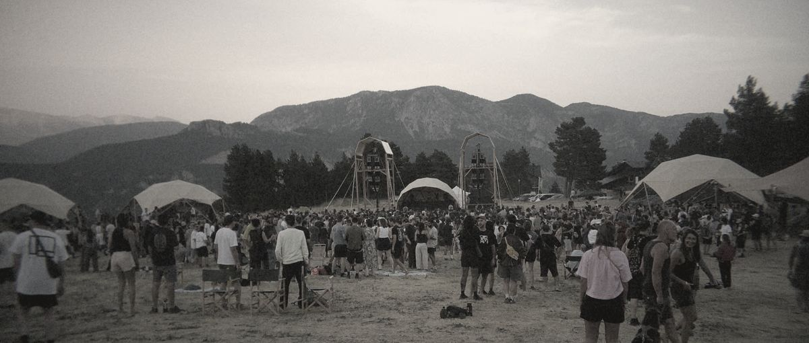

¡hola, soy yo!
¡hola, soy yo!Sobre mí
Soy Gema Díez, Researcher y Service Design Strategist con más de 8 años trabajando en servicios complejos.
He trabajado en energía, banca, salud, seguros, retail y tercer sector. Mi trabajo empieza donde las cosas están fragmentadas, con plataformas que no se hablan, equipos con visiones distintas y mensajes que no llegan, y termina cuando funcionan como un solo servicio.
Mapeo cómo son las cosas de verdad, escuchando a las personas y leyendo los datos, decido qué no puede fallar y ayudo a que todo el equipo empuje en la misma dirección.
- +8 añosEn diseño de servicios, investigación y experiencia de cliente
- Docente desde 2023Mentora de Design y User Research en Uxer School
- 4 países europeosInvestigación internacional con equipos y usuarios en varios mercados
- Ciencias PolíticasDe ahí viene mi forma de pensar en sistemas
de valoración de mi alumnado en las clases de research.
lo dicen mis alumnos/asEs muy atenta y divertida, se nota que se preocupa por cada uno y dedica tiempo a cada grupo!
Lo mejor de esta materia, da gusto encontrarse con una persona con tanto conocimiento
Ver la publicación de la escuela en LinkedIn ↗Genial instrucciones, explicaciones, actitud... Mis dieses
Cine, música electrónica, libros que enganchan y la luz en los rincones.
Me gusta estar fuera de casa, ir a exposiciones, escuchar música y las buenas charlas. Y hablar de gatos, claro.





Madre extremeña, padre asturiano. Sé de paraísos naturales.
- Pan con yogur. Juntos, sí.
- Adicta al chorro de calor del secador.
- Siempre camino por la izquierda.
- Tiburones, ni en foto.
- Vino naranja, por favor.
